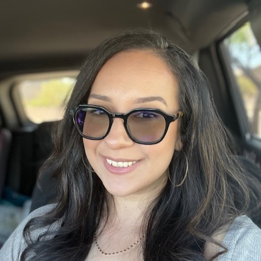

Michelle Wakunguma

Summary
Insurance Specialist / Aspiring Web Developer
I am a health Insurance Specialist at Copperstate Ob/Gyn in Tucson, AZ.
I love coffee and spending time with my family.
Education
- Catalina Magnet High School
- The Complete 2023 Web Development Bootcamp
Work Experience
Copperstate Ob/Gyn, March 2018 to present
- Insurance Specialist
- Review and priotitize daily tasks
- Obtain referrals and authorizations for office and facility services as required
- Answer patient questions regarding statements, EOBs, deductibles, etc
- Post and process insurance payments accordingly into EMR system
- Investigate clais to make sure they are true and accurate before processing
Western Dental, August 2014 to March 2018
- Patient Care Coordinator
- Verify patient eligibility and update patient records
- Coordinate and present treatment plans and payment arrangments to patients
- Maintain appointment books for doctor and hygienest
- Consistently reach and exceed monthly sales goals
Sears Holdings Corporation, October 2013 to August 2014
- Customer Service Advisor (Spanish)
- Assisted customers with online orders and offered retail support
- Provided accurate information and maintained records up to date
- Properly directed customer's calls to the correct department or person as needed
Skills
- Proficient in Microsoft and Excel
- Excellent telephone and communication skills
- Fluent in writing and speaking English and Spanish
- Knowledge of CPT codes and medical terminology
- Experience with EMR/EHR systems
Other